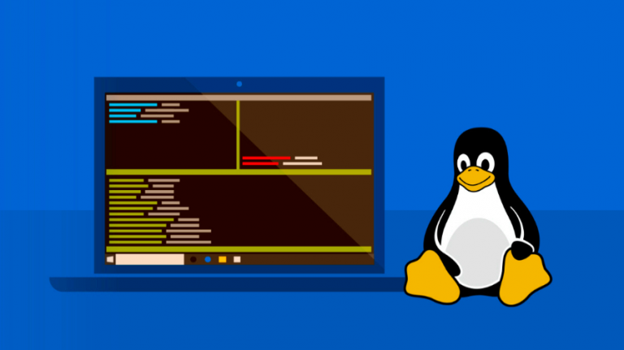

Linux

Apa itu Linux?
Linux adalah salah satu OS yang menganut sistem UNIX yang
menggunakan model pengembangan, serta distribusi software secara
gratis, maupun biasa Anda kenal dengan sebutan open source. Sama
halnya dengan aplikasi open source lainnya, Linux juga dapat
dikembangkan dan di distribusikan secara gratis. Hal ini merupakan
salah satu daya tarik dari OS ini.
Linux sendiri mungkin kurang familiar apabila dibandingkan dengan
Windows maupun Macintosh. Hal tersebut sangat wajar karena pengguna
Linux merupakan orang-orang dengan jumlah presentase yang sangat
sedikit, yaitu betapa sedikitnya pengguna Linux yang hanya 1,5%
apabila dibandingkan dengan Macintosh sebanyak 11%, serta Windows
malah lebih dari 85%.
Selain itu, Linux juga OS yang handal nan tangguh, meskipun Anda
tidak membutuhkan biaya untuk memakainya. Linux lebih terbukti
stabil dan jarang terdapat permasalahan yang umum, misalnya proses
yang melambat, terkena virus maupun malware, dan lain-lain. Jadi,
Anda akan jarang mendapat masalah-masalah pada OS ini. Versi dari
Linux sendiri lebih dikenal dengan istilah distributions, atau
biasanya disingkat dengan distro.
Linux ini memiliki sejumlah versi yang berbeda, serta dapat memenuhi
kebutuhan dari para pengguna yang tentunya akan berbeda-beda pula.
Mulai dari para pengguna baru sampai pengguna lama dapat mendapatkan
versi Linux yang disesuaikan dengan kebutuhan. Saat ini, hampir
semua versi Linux dapat diunduh secara gratis dan dipasang di mana
saja sesuai dengan keinginan Anda.
Sejarah Linux

Linux pada awalnya dibuat oleh seorang mahasiswa Finlandia yang
bernama Linus Torvalds. Dulunya Linux merupakan proyek hobi yang
diinspirasikan dari Minix, yaitu sistem UNIX kecil yang dikembangkan
oleh Andrew Tanenbaum. Linux versi 0.01 dikerjakan sekitar bulan
Agustus 1991. Kemudian pada tanggal 5 Oktober 1991, Linus
mengumumkan versi resmi Linux, yaitu versi 0.02 yang hanya dapat
menjalankan shell bash (GNU Bourne Again Shell) dan gcc (GNU C
Compiler).
Saat ini Linux adalah sistem UNIX yang sangat lengkap, bisa
digunakan untuk jaringan, pengembangan software dan bahkan untuk
pekerjaan sehari-hari. Linux sekarang merupakan alternatif sistem
operasi yang jauh lebih murah jika dibandingkan dengan sistem
operasi komersial (misalnya Windows 9.x/NT/2000/ME). Linux mempunyai
perkembangan yang sangat cepat. Hal ini dapat dimungkinkan karena
Linux dikembangkan oleh beragam kelompok orang. Keragaman ini
termasuk tingkat pengetahuan, pengalaman serta geografis. Agar
kelompok ini dapat berkomunikasi dengan cepat dan efisien, internet
menjadi pilihan yang sangat tepat.
Fungsi Linux
Linux adalah sistem operasi sumber terbuka yang memiliki berbagai
fungsi krusial dalam dunia komputasi modern. Salah satu fungsi utama
Linux adalah sebagai sistem operasi server. Sebagian besar server di
seluruh dunia menggunakan Linux karena kehandalannya, keamanannya,
dan kemampuannya untuk menangani beban kerja yang tinggi. Dengan
struktur kernel yang kuat, Linux dapat memberikan kinerja yang
optimal dalam mengelola berbagai layanan, mulai dari web hosting
hingga basis data. Selain itu, dukungan terbuka untuk pemrograman
dan integrasi dengan berbagai aplikasi membuat Linux menjadi pilihan
utama dalam lingkungan server.
Selain sebagai sistem operasi server, Linux juga dikenal sebagai
sistem operasi yang digunakan pada perangkat embedded dan IoT
(Internet of Things). Kemampuannya untuk berjalan pada perangkat
dengan sumber daya terbatas membuat Linux ideal untuk digunakan pada
perangkat seperti router, kamera keamanan, dan perangkat IoT
lainnya. Dengan desain yang fleksibel dan dapat disesuaikan, Linux
memungkinkan pengembang untuk menyesuaikan sistem sesuai kebutuhan
spesifik perangkat. Dengan demikian, Linux tidak hanya mendominasi
di tingkat server tetapi juga memberikan kontribusi signifikan dalam
menggerakkan ekosistem perangkat keras yang semakin terkoneksi dalam
dunia modern.
Macam-macam Distro Linux
Dengan dukungan FSF, membuat GNU/Linux jadis ebuah sistem operasi
terbuka yang kemudian didistribusikan ke banyak orang. Maka lahirlah
apa yang disebut distro, yang merupakan kependekan dari distribusi
GNU/Linux.
Distro ini banyak dikembangkan orang tetapi sumbernya sama, yakni
GNU/Linux. Tiap distro yang hadir juga biasanya juga dikembangkan
kembali menjadi distro yang baru. Umumnya distro ini gratis
digunakan tetapi ada beberapa distro GNU/Linux yang dijual mengingat
biasanya ada fitur bagus di dalamnya.
Lalu, apa sajakah distro Linux yang beredar. Ada banyak jumlahnya
tetapi macam-macam distro Linux yang kami ulas kali ini hanya ada 5
distro saja yang bisa dibilang populer. Langsung saja simak
daftarnya berikut ini.
1. Linux Mint

Linux Mint adalah distribusi Linux berbasis Ubuntu yang dirancang
untuk memberikan pengalaman pengguna yang intuitif dan ramah.
Dikenal karena antarmuka desktopnya yang sederhana dan mudah
digunakan, Linux Mint menawarkan lingkungan Cinnamon, MATE, atau
Xfce yang dapat disesuaikan sesuai preferensi pengguna. Keunggulan
Linux Mint meliputi stabilitas tinggi, dukungan perangkat keras yang
luas, dan pemutakhiran perangkat lunak yang terkelola dengan baik.
Selain itu, sistem manajemen paketnya yang menggunakan APT
memudahkan instalasi dan pemeliharaan perangkat lunak. Dengan fokus
pada kenyamanan pengguna, Linux Mint cocok untuk pengguna baru yang
ingin beralih ke Linux tanpa menghadapi belajar kurva yang curam.
2. Ubuntu

Ubuntu adalah sistem operasi berbasis Linux yang sangat populer,
dirancang untuk memberikan pengalaman pengguna yang intuitif dan
ramah. Dikembangkan oleh Canonical, Ubuntu menonjol dengan antarmuka
pengguna yang bersih dan mudah digunakan, disertai dengan berbagai
aplikasi bawaan yang mencakup perangkat lunak produktivitas,
hiburan, dan pengelolaan file. Ubuntu juga dikenal karena dukungan
komunitas yang besar dan aktif, yang memberikan pembaruan keamanan
dan pemeliharaan sistem secara teratur. Sebagai distribusi Linux
yang bersifat open source, Ubuntu memberikan kebebasan kepada
pengguna untuk menyesuaikan sistem sesuai kebutuhan mereka,
menjadikannya pilihan yang populer baik untuk pengguna rumahan
maupun pengembang.
3. Debian

Debian adalah sebuah sistem operasi komputer berbasis kernel Linux
yang bersifat gratis dan bersumber terbuka. Dikenal karena
stabilitasnya yang tinggi, Debian digunakan oleh banyak pengguna dan
organisasi di seluruh dunia. Debian menyediakan lebih dari 59.000
paket perangkat lunak yang dapat diinstal, dan menggunakan manajemen
paket APT (Advanced Package Tool) untuk memudahkan instalasi,
pembaruan, dan penghapusan perangkat lunak. Komunitas Debian yang
besar dan beragam terlibat dalam pengembangan, pemeliharaan, dan
dokumentasi proyek ini, menjadikannya salah satu distribusi Linux
yang paling dihormati dan mapan.
4. Kali Linux

Kali Linux adalah distribusi perangkat lunak sumber terbuka yang
dirancang khusus untuk keperluan pengujian keamanan dan penetrasi.
Dikembangkan oleh Offensive Security, Kali Linux menyediakan
berbagai alat dan utilitas yang dibutuhkan oleh profesional keamanan
informasi, peneliti keamanan, dan pengujian penetrasi untuk
mengevaluasi dan mengidentifikasi potensi kerentanannya dalam sistem
komputer dan jaringan. Didukung oleh kernel Linux, Kali Linux
menawarkan lingkungan yang kokoh dan dapat disesuaikan, serta
mencakup berbagai alat khusus seperti Metasploit, Wireshark, dan
Aircrack-ng, membuatnya menjadi pilihan utama untuk kegiatan uji
penetrasi dan penelitian keamanan.
5. Fedora

Fedora adalah distribusi Linux yang berbasis komunitas dan bersifat
sumber terbuka. Dikembangkan oleh Proyek Fedora, distribusi ini
menawarkan lingkungan desktop yang stabil dan inovatif, serta
menyediakan berbagai paket perangkat lunak terkini. Fedora menjadi
terkenal karena pendekatannya yang mendukung kebebasan pengguna,
keamanan, dan kestabilan sistem. Selain itu, Fedora juga menjadi
basis bagi distribusi lain seperti Red Hat Enterprise Linux (RHEL),
yang membuatnya menjadi pilihan yang populer baik untuk pengguna
individu maupun perusahaan. Dengan sikap komunitas yang aktif,
Fedora terus berkembang dan menyediakan lingkungan pengembangan yang
ideal untuk pengguna Linux yang ingin menjelajahi teknologi terbaru
dan berkontribusi dalam pengembangan perangkat lunak sumber terbuka.